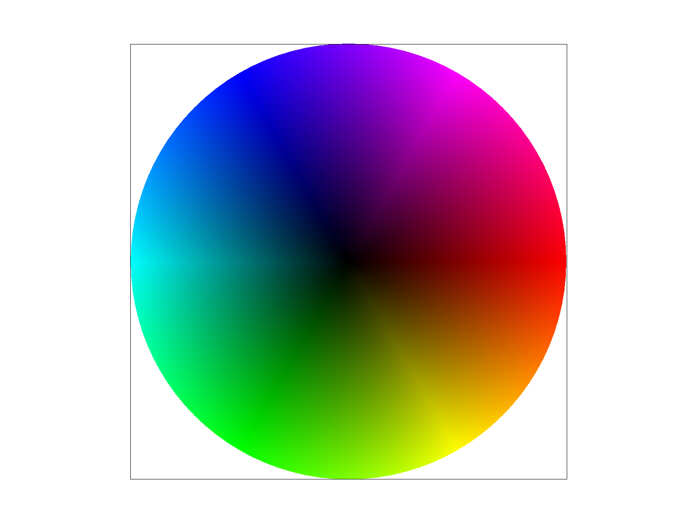

Webpage: https://cal-cs184-student.github.io/hw-webpages-sp24-diana-qing/
Overview
In this homework, I built a rasterizer that can supersample images to reduce aliasing, perform transformations like rotations and translations, and map textures using different sampling methods at various mipmap levels. Something interesting I learned is how there are many different ways to sample images, and each sampling method has its pros and cons as they differ in complexity, time, and quality of the rasterized image. Another interesting thing I learned is how to create my own svg files by just specifying coordinates and colors.
Section I: Rasterization
Part 1: Rasterizing single-color triangles
rasterize_triangle takes in 3 pairs of x, y coordinates representing the vertices of a triangle. The bounding box is found by taking the min and max of these x and y values to find the smallest or tightest rectangle that bounds and contains the entire triangle. I also took the floor of the min x and y value, and the ceil of the max x and y value as each pixel’s corners are situated at whole numbers, not decimals.
To rasterize triangles, I iterate through each pixel in the bounding box and use the 3-line point-in-triangle test to determine whether the pixel should be filled in based on whether the (x, y) point corresponding to that pixel falls inside or on the edge of the triangle. If it does, I fill the pixel in using the color passed into rasterize_triangle. Otherwise, I don’t fill the pixel in. The point corresponding to a pixel is always the point at the center of the pixel (i.e. if (x, y) is the point at the upper left corner of a pixel, (x+0.5, y+0.5) is used for that pixel when conducting the point-in-triangle test).
Given a point (x, y) at the center of a pixel and 2 adjacent points (x0, y0) and (x1, y1), a line test is performed by computing -(x - x0) * (y1 - y0) + (y - y0) * (x1 - x0). After performing all 3 tests, if the outcome of all 3 tests is >= 0, or if the outcome of all 3 tests is <= 0, then the point is either inside or on the edge of the triangle and thus the pixel can be filled in. In lecture, we only filled the pixel in when the outcome of all 3 tests was > 0, but this was because the 3 triangle vertices were in a counterclockwise orientation. Since the triangle vertices can be passed into rasterize_triangle in either clockwise or counterclockwise order, as long as all 3 line test outcomes have the same sign or are equal to zero, the pixel can be filled in. The = sign is included in the check because points on the edge of the triangle should be drawn.
My algorithm is no worse than one that checks each sample within the bounding box of the triangle because it only iterates through and looks at pixels inside the bounding box.
|
|
Extra Credit: One optimization I made to speed up rasterization is using barycentric coordinates instead of the 3-line triangle-in-point test to determine if a point falls inside the triangle. In the triangle-in-point test, since the coordinates could be passed into rasterize_triangle in clockwise or counterclockwise order, we have to do 2 checks to determine if the point is inside the triangle: (1) checking that all 3 lines are >= 0 or (2) checking that all 3 lines are <= 0. However, with barycentric coordinates, we just have to do 1 check (checking that alpha, beta, and gamma are all >= 0) to determine if the point is inside the triangle, which reduces rasterization time.
Another optimization I made is factoring out redundant arithmetic operations from loops. For example, each time we go through the innermost loop, we calculate y2 - y1. Thus, I calculated the result of y2 - y1 outside the loop, and used the result directly in the loop to prevent having to re-compute y2 - y1 each time we go through the loop. I did this for all arithmetic operations that were being re-computed each time in the loop.
Below is the timing comparison table between triangle rasterization with and without optimizations. Each value represents the time taken (in milliseconds) to rasterize tests 1-6 in svg/basic. For all tests, the rasterization time is lower when using optimizations, especially for tests 3 and 4. These times were determined by using clock() around svg.draw() in DrawRend::redraw() to determine time taken for svg.draw() to run.
| Test | Time Taken (No Optimization) in milliseconds | Time Taken (With Optimizations) in milliseconds |
|---|---|---|
| test1 | 1.162 | 1.013 |
| test2 | 0.067 | 0.065 |
| test3 | 5.462 | 4.924 |
| test4 | 0.21 | 0.18 |
| test5 | 0.59 | 0.482 |
| test6 | 0.492 | 0.488 |
Part 2: Antialiasing triangles
In Task 1, my algorithm consisted of a nested loop to iterate through each pixel in the bounding box. My supersampling algorithm adds another nested loop inside Task 1’s nested loop, allowing me to iterate through each sub-pixel within a pixel, obtain a supersample, and add that supersample to the sample buffer. Each pixel is split into sqrt(sample_rate) * sqrt(sample_rate) sub-pixels, and each supersample is the point at the center of a sub-pixel. The same 3-line point-in-triangle test from Task 1 is performed except this time using the supersampled x and y coordinates, which means the line tests help determine whether each sub-pixel should be filled in. The final color of a pixel is the average color of its supersamples.
Supersampling is useful because it allows us to sample each pixel at more than just 1 point. Since a pixel can consist of multiple colors, sampling a pixel at multiple points makes the transition between shapes and colors more gradual and less harsh and sharp, thus reducing the appearance of jaggies and helping antialias triangles.
The rasterization pipeline was modified because the size of sample_buffer was increased to width * height * sample_rate to allow for enough space to store sample_rate supersamples for each pixel. This means within a pixel (x, y), each supersample was stored at index sample_rate * (width * y + x) + sample_num in sample_buffer, where sample_num ranges from 0 to sample_rate-1 (inclusive) and represents each of the supersamples within the pixel. Another modification to the pipeline is that we first rasterized a higher-dimension image to the sample buffer, then downsampled by filling in each pixel with the average color of its supersamples, then drew to the frame buffer. I also changed fill_pixel to set all supersamples within a point or line to be the same color to prevent the window box from being antialiased.
From the red triangle in test4.svg, we see that when sample rate is 1, the triangle corner looks disconnected with jagged and sharp edges. When sample rate is 4, the different components start becoming more connected, but the color transition between darker and lighter shades of red can still be harsh. When sample rate is 16, the corner looks more smoothly connected and blended together and less jagged. These results are observed because as sample rate increases, we're sampling each pixel at more points, which means we have a better grasp of what color each pixel should be, allowing pixels to blend more smoothly in with each other since each pixel is closer to the color they should be.
Results from supersampling basic/test4.svg:|
|

|
|
Extra Credit: Jittered Sampling
An alternative antialiasing method I implemented is jittered sampling (results below). In both grid supersampling and jittered sampling, we split each pixel into sqrt(sample_rate) rows and sqrt(sample_rate) columns, thus creating sqrt(sample_rate) * sqrt(sample_rate) sub-pixels within each pixel. However, grid supersampling always samples each sub-pixel at its center, which means within a pixel, all the supersamples are evenly spaced out. Jittered sampling lets us randomly pick a point inside the sub-pixel to sample instead of always having to pick the point at the center of the sub-pixel, which means within a pixel, the supersamples aren’t evenly spaced out. Jittered sampling results in the pixels being more smoothly blended in with each other compared to grid-based. The transition of the different shades of red is also more gradual and less harsh using jittered sampling.

|

|

|
Part 3: Transforms
|
|
Extra Credit: An extra feature I added to my GUI is adding keyboard shortcuts (using two currently unused keys) to rotate the viewport. Pressing “A” rotates the viewport 90 degrees left (from the viewport’s current orientation), while pressing “D” rotates the viewport 90 degrees right.
Result of pressing "A" to rotate viewport left:

|

|

|
To implement the feature for “A”: I got the NDC corresponding to the current SVG using svg_to_ndc[current_svg]. An NDC is a 3x3 matrix, which means it can be translated and rotated. I translated the NDC matrix 500 units right by multiplying it by CGL::translate(500, 0). This was because the viewport can go out of bounds and get cut off the screen when it’s rotated if it’s not shifted right first. I then multiplied this result by CGL::rotate(90) to rotate the viewport 90 degrees left, and set this matrix to be the new NDC corresponding to the current SVG. The implementation for “D” was similar except translating down first, then rotating right.
Section II: Sampling
Part 4: Barycentric coordinates
Barycentric coordinates are a system where coordinates are defined by 3 values: alpha, beta, and gamma. They allow us to linearly interpolate values across a triangle. For example, the svg triangle below has 1 red, 1 blue, and 1 green vertex. It’s smoothly blended because the vertex colors were linearly interpolated across the triangle as the color corresponding to a point in the triangle can be understood as a weighted sum between the 3 vertices of the triangle (which are colors in this case) and the weights alpha, beta, and gamma. Let’s say the red vertex corresponds to A, blue vertex corresponds to B, and the green vertex corresponds to C. For some point (x, y) inside or on the edge of the triangle, (x, y) = alpha*A + beta*B + gamma*C. If (x, y) is situated on vertex A, then we know (alpha, beta, gamma) = (1, 0, 0), which means (x, y) = A and thus (x, y) is red. Instead of color, we can also linearly interpolate other values like texture. Another property of barycentric coordinates is that alpha, beta, and gamma sum to 1. This makes barycentric coordinates helpful for determining whether a point lies in the triangle because if any of alpha, beta, or gamma is < 0, then we know the point lies outside the triangle.
|
|

|
Part 5: "Pixel sampling" for texture mapping
Pixel sampling refers to using nearby pixels in the texture to determine what color to fill in a pixel. I implemented pixel sampling by building off my Task 4 implementation where I found the barycentric coordinates corresponding to some screen space point (x, y). I computed the uv barycentric coordinate as a weighted sum between alpha, beta, and gamma and the passed in u, v values (which are the texture coordinates of the triangle’s vertices). Then I used nearest or bilinear sampling to get the color corresponding to the point.
Regardless of the sampling method, we first scale up the coordinates by the width-1 and height-1 of the mipmap. In nearest sampling, we round the scaled up uv coordinates and find the point that’s closest. Then we use the texel of the closest point to set (u, v)’s color.
In bilinear sampling, we get the 4 closest points to the scaled up uv coordinate by flooring and ceiling the uv coordinate, then get the texel for each of these 4 closest points. Then we perform bilinear interpolation 3 times (twice horizontally and once vertically) to get (u, v)’s color.
An example where bilinear sampling defeats nearest sampling can be seen in texmap/test2.svg. At sample rate 1, the white lines (which probably represent latitude and longitude lines) are disconnected and jagged when using nearest sampling, but look slightly more connected and begin blending together when using bilinear sampling. At sample rate 16, the lines are more connected and blended together when using nearest sampling, and the staircase-like shapes look less harsh compared to sample rate 1 bilinear sampling but are still prominent. At sample rate 16, when using bilinear sampling, the line looks more smoothly connected and less jagged compared to nearest sampling. There will be a large difference between the two methods when there are lots of details in both directions. Nearest sampling only considers the closest point while bilinear looks at the 4 closest surrounding points and interpolates them, which is why the transition between pixels looks smoother and more gradual when using bilinear sampling.

|

|
|
|
|
Part 6: "Level sampling" with mipmaps for texture mapping
Level sampling refers to sampling images at different resolutions, where level 0 is the highest resolution of the image. It allows us to interpolate between pixels of a level or interpolate between pixels of different mipmap levels so that we can take into account how far away objects are from the viewer when we rasterize the object. Closer objects should be more clear and thus should be sampled at a higher resolution.
Building off my Task 5 implementation, I additionally found the (u,v) barycentric coordinates corresponding to the screen space pixels (x+1, y) and (x, y+1) using the same method as in Task 4 and 5. Then I sampled based on the specified pixel sampling method (psm) and level sampling method (lsm) to get the color for (x, y).
To perform nearest or bilinear sampling, I used my existing implementation of these sampling functions from Task 5. To get the mipmap level to sample at, in Texture::get_level(), I used the formulas found in lecture. I found (du/dx, dv/dx) by subtracting sp.p_dx_uv and sp.p_uv, then found (du/dy, dv/dy) by subtracting sp.p_dy_uv and sp.p_uv. Then I computed L using the equation from lecture, then found the mipmap level D by taking log2(L). I also clamped the level to be between 0 and mipmap.size()-1 to ensure the levels we were sampling from were within bounds. When lsm is L_ZERO, the mipmap level is 0. When lsm is L_NEAREST, we get the mipmap level by calling get_level() and rounding down the result (since we can’t sample at a level that isn’t a whole number). When lsm is L_LINEAR, we need to sample at 2 levels. The first level we sample at is the floor of the level returned by get_level() , and the other level we sample at is 1 + the floor. The final color of the pixel is thus a weighted sum between the levels and the color returned from pixel sampling.
In terms of speed, supersampling can be slow as the sample rate increases because we have to sample more points per pixel. Pixel sampling may be faster than level sampling as we don’t have to interpolate across mipmap levels when using pixel sampling. Level sampling requires more memory usage than pixel sampling as we have to store mipmaps at various levels whereas pixel sampling only uses one level. Increasing the number of samples per pixel can also lead to more memory usage as we have to store more supersamples. Antialiasing power is weaker for point sampling as it’s subject to moire patterns and jaggies. Antialiasing power may be stronger when sample rate is very high as we’re sampling more points per pixel, which reduces the moire effect and jaggies. Level sampling can also reduce the appearance of jaggies and the moire effect, but may result in over blurring.
In the following images, we see how
|
|

|
|
|
|
Section III: Art Competition
If you are not participating in the optional art competition, don't worry about this section!